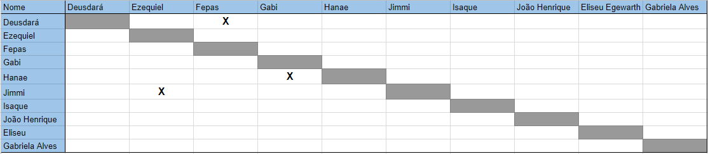

Sprint 5
Duração
Data início: 15/04/2018Data término: 21/04/2018
Duração: 7 dias
Objetivos
- Consolidar a Release 1;- Planejar a Release 2;
- Deploy Contínuo;
- Apresentação da release 1;
- Aumentar a interação dos membros;
- Diminuir os riscos;
Sprint Backlog
Implementar API adequada a Arquitetura de Microsserviços #24Remodelagem da arquitetura #188
Visualizar hospitais #189
Visualizar setores #190
Adequar cobertura de testes ao contexto da disciplina #192
Criar Politica de Privacidade do Aplicativo #200
Alinhar Labels ao Roadmap #201
Detalhar requisitos #204
Atualizar EAP #205
Levantar requisitos #206
Criar logo e definir paleta de cores #207
Papéis
- Product Owner: João Egewarth
- Scrum Master: Isaque Alves
- DevOps: Eliseu Egewarth
- Arquitetura: Gabriela Alves
- Desenvolvedores: Beatriz Hanae, Ezequiel De Oliveira, Felipe Campos, Gabriela Guedes, Guilherme Deusdará, Vitor Leal.
Pareamento
Pontos
Planejados:
- 49 PontosAdicionados:
Débito Técnico:- 16 pontos
Viabilidade Técnica:
- 3 pontos.
Executados:
- 52 pontosBurndown

Revisão
Duração: 1 hora.Nesta revisão foram apresentados todos os artefatos alcançados durante a sprint.
Dívidas Técnicas
Planejamento da Release #202Documentar sprint 5 #203
Retrospectiva
Duração: 1:00 horas.Para consolidar a release 1 foi criado um postmorten para identificar potenciais e erros cometidos e tratamento para os mesmos.
Erros
- Comunicação falha ou inexistente;- Testes locais inexistentes;
- Ambiente local não configurado;
- Rebase muito errado;
- Pontuação das atividades;
- Demora para rotacionar os conhecimentos dos papéis;
- Falta de comunicação com a Gabriela (conversar com a Gaby);
- DevOps não estava à frente da sua função;
- Pegar um projeto que não conhecemos a tecnologia;
- Feedback do scrum master internos entre EPS;
- DevOps não procurou ajuda externa;
- PO deve melhorar as issues e validar mais o produto com o cliente;
Melhoras:
Rebase:Os PR só podem ser aceitos se revisados por 2
HOTFIX se necessário (pareado);
Comunicação:
Melhorar a comunicação interna EPS
Melhorar a comunicação interna MDS
Comunicar mais nas issues
Não fazer mais os grupos dos pontos
GitHubBot
Testes locais inexistentes:
Fazer o ambiente (https://github.com/fga-gpp-mds/2018.1-Dulce_App/blob/master/guia_de_instalacao.md)
Instalar script do lint nas máquinas
DevOps não estava à frente da sua função
Melhorar a comunicação com MDS
Procurar pessoas experientes para ajudar.
Acertos:
Pareamento;Correr atrás de pessoas externas (Gaby)
Pareamento com os coachs
Definir a visão do aplicativo
Entender a estrutura da equipe
Comunicação melhorando
Prioridade e trabalho em equipe
Adaptabilidade
Comunicação do PO com os MDS (codereview)
Quadro de conhecimento
O quadro de conhecimento da sprint pode ser encontrado aqui.Frequência de commits
A frequência de commits pode ser encontrada aquiDesempenho
Riscos
Risco |
Ação Preventiva |
Ação Reativa |
Conhecimento do grupo sobre a API |
Aplicar treinamento |
Feedback
O grupo passou a discutir mais abertamente as suas funções, foram identificados potênciais dentro da equipe de MDS como: design, developers e coach ágil.
O time já possui uma maturidade maior sobre o projeto, mas ainda tem muito trabalho a ser feito para otimizar mais ainda as reuniões de sábado.